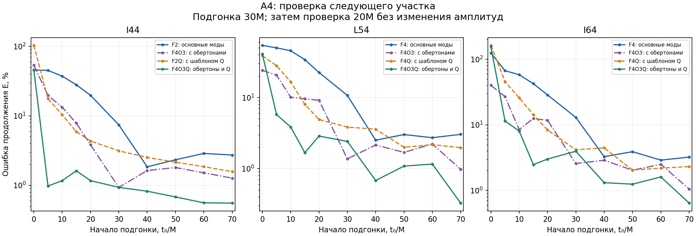
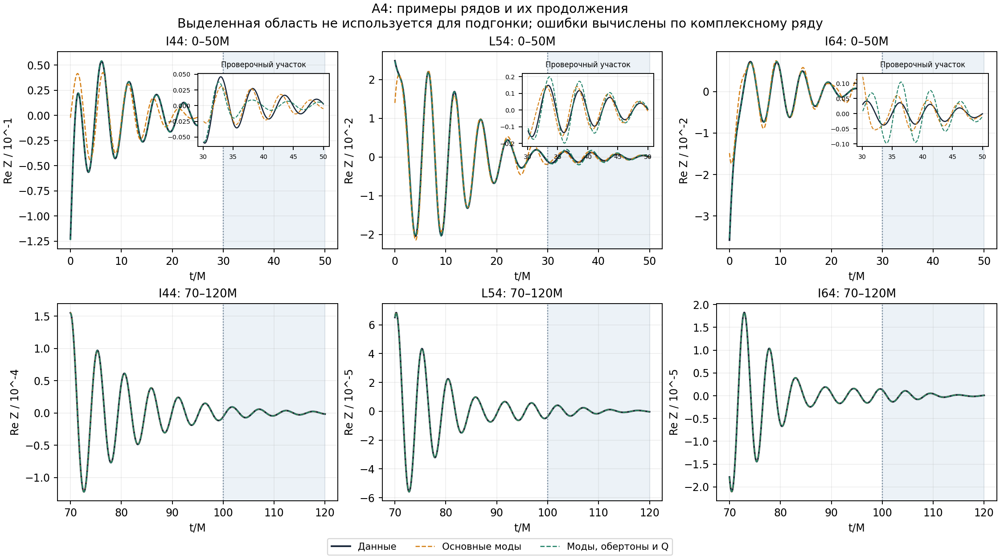
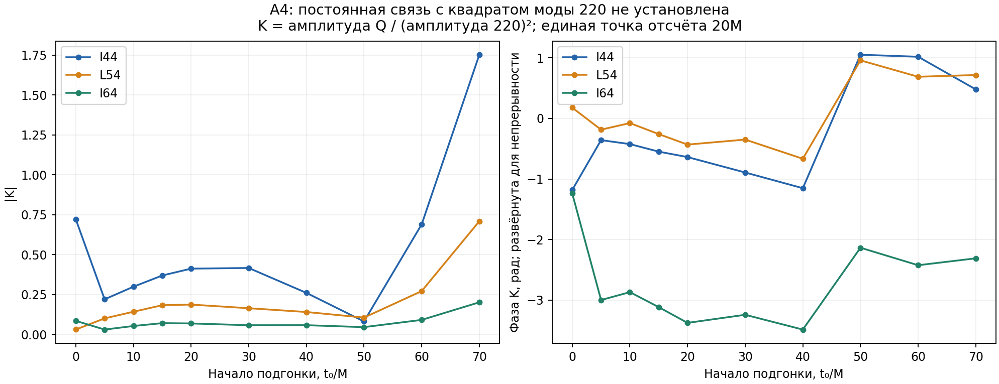

Отчёт сохранён как результат своего этапа. Исправления и границы всего выпуска сведены в итоговом отчёте.
BH-YITIAN-A4: компоненты m=4 общего горизонта
Дата: 15 сентября 2026 года. Продолжение A3. Использован тот же подтверждённый архив Yitian. Эволюция QC0/SpEC и расчёты A1–A3 не повторялись.
Результат: поздняя динамика I44, L54 и I64 согласуется с суммой керровских колебаний. Смешение особенно существенно для L54 и I64. Добавочные затухающие шаблоны улучшают некоторые промежуточные и поздние участки, однако конкретная квадратичная связь 220×220 не идентифицирована. Самая ранняя динамика не замкнута рассмотренными моделями.
Исходные определения
Авторский блокнот I44.ipynb прочитан как текст; его команды не исполнялись. Обработка повторяет его соглашения:
$$Z_{\ell4}(t)=\left[H_{\ell4}^{}(t)-c_{\ell4}\right]e^{-4i\Omega t},\quad c_{\ell4}=\operatorname{mean}{400\leq t/M\leq500}H{\ell4}^{}(t),$$
Ω=0.20878380853617037 M⁻¹. Здесь H — сохранённый коэффициент HDF5, а Z — момент после сопряжения, вычитания позднего смещения и поворота. Для сравнения используется масса Mf=0.95162M и безразмерный спин χ=0.68644. Параметры QC0 сюда не подставляются.
| Ряд | Набор HDF5 | Индекс k=ℓ(ℓ+1)+m |
|---|---|---|
| I44 | geo_mass/Adaptive | 24 |
| L54 | geo_spin/Adaptive | 34 |
| I64 | geo_mass/Adaptive | 46 |
Сопоставление m=±4 проверяет вещественность исходного скалярного поля, а не даёт независимого численного разрешения. В отличие от A3, постоянные значения этих m≠0 моментов должны исчезать в осесимметричном пределе; здесь поздние небольшие смещения вычитаются как в авторском блокноте.
| Момент | Модуль позднего среднего | Среднеквадратичное рассеяние 400–500M |
|---|---|---|
| I44 | 1.8966e-11 | 9.0355e-12 |
| L54 | 9.2874e-12 | 6.3778e-12 |
| I64 | 3.8389e-12 | 2.6017e-12 |
Позднее рассеяние не используется как известная ошибка ранних данных.
Модели и способ проверки
$$Z_{\rm model}(t)=\sum_k C_k e^{-i(\omega_k-i\alpha_k)(t-t_0)}.$$
Комплексные амплитуды определяются методом наименьших квадратов с нормированием столбцов. Подбираются одновременно действительная и мнимая части; частоты, затухания, Mf и χ под каждый ряд не подгоняются. QNM спинового веса −2 взяты для спектральной модели; сами моменты горизонта определены через обычные сферические гармоники.
| Компонента | ω, M⁻¹ | α, M⁻¹ |
|---|---|---|
| 440 | 1.188363807 | 0.089158509 |
| 540 | 1.398835249 | 0.090675201 |
| 640 | 1.608129087 | 0.091728428 |
| 740 | 1.817063866 | 0.092482010 |
| 840 | 2.025912455 | 0.093041537 |
| 441 | 1.183434870 | 0.268044403 |
| 442 | 1.173918243 | 0.448579609 |
| 443 | 1.160455948 | 0.631677823 |
| Q | 1.106942662 | 0.170843662 |
F1–F5 — последовательные наборы основных мод: 440; 440+540; затем добавляются 640, 740 и 840. O1–O3 добавляют обертоны 441–443. Полная таблица моделей:
| Модель | Состав | Число вещественных амплитуд |
|---|---|---|
| F1 | 440 | 2 |
| F2 | 440 + 540 | 4 |
| F3 | 440 + 540 + 640 | 6 |
| F4 | 440 + 540 + 640 + 740 | 8 |
| F5 | 440 + 540 + 640 + 740 + 840 | 10 |
| F1O3 | 440 + 441 + 442 + 443 | 8 |
| F2O1 | 440 + 540 + 441 | 6 |
| F2O2 | 440 + 540 + 441 + 442 | 8 |
| F2O3 | 440 + 540 + 441 + 442 + 443 | 10 |
| F4O3 | 440 + 540 + 640 + 740 + 441 + 442 + 443 | 14 |
| Q | Q | 2 |
| F1Q | 440 + Q | 4 |
| F2Q | 440 + 540 + Q | 6 |
| F3Q | 440 + 540 + 640 + Q | 8 |
| F4Q | 440 + 540 + 640 + 740 + Q | 10 |
| F2O3Q | 440 + 540 + 441 + 442 + 443 + Q | 12 |
| F4O3Q | 440 + 540 + 640 + 740 + 441 + 442 + 443 + Q | 16 |
В разделе IV D статьи авторы указывают пару 440+540 для позднего I44 и существенное смешение для L54/I64. Поэтому в качестве опорных сравнений здесь взяты F2 для I44 и общий расширенный набор F4 для L54/I64. F4 в этих двух случаях — наш контрольный выбор; статья не перечисляет для них точный набор в этом абзаце. Chen и соавторы.
Начала t0=0,5,10,15,20,30,40,50,60,70M. Амплитуды определяются по [t0,t0+30]M, затем без изменения продолжаются на (t0+30,t0+50]M. Включены все отсчёты, в том числе вблизи нулей действительной или мнимой части.
$$E=\frac{|Z-Z_{\rm model}|_2}{|Z|_2}.$$
Проценты означают 100E на всём указанном отрезке, а не поточечную погрешность геометрии и не вероятность гипотезы. Поздний фон и конечные параметры известны из всей симуляции, поэтому проверка не является полностью слепым прогнозом. Проверочные данные не участвуют в подборе амплитуд, но наборы моделей и выбор представительных окон исследовательские; независимого окончательного испытания для выбора моделей здесь нет. Перекрывающиеся окна не независимы.
Поздняя динамика и смешение
Подгонка 70–100M, проверка 100–120M. Во всех столбцах показана ошибка продолжения, %:
| Момент | F1: 440 | F2: 440+540 | F3: +640 | F4: +740 | F5: +840 |
|---|---|---|---|---|---|
| I44 | 3.0130 | 2.7335 | 2.7296 | 2.7313 | 2.7315 |
| L54 | 17.4083 | 3.0451 | 3.0322 | 3.0323 | 3.0322 |
| I64 | 27.1047 | 4.9613 | 3.2283 | 3.2284 | 3.2281 |
Сильное улучшение L54 при добавлении 540 и I64 при добавлении 540/640 подтверждает практическую важность смешения. Дальнейшее расширение основного набора не даёт сопоставимого выигрыша на этом проверочном интервале. Это не означает, что остальные компоненты строго отсутствуют.
| Момент | Опорная модель | Подгонка, % | Проверка, % | Абсолютная среднеквадратичная ошибка проверки |
|---|---|---|---|---|
| I44 | F2 | 0.4126 | 2.7335 | 1.5447e-07 |
| L54 | F4 | 0.3329 | 3.0323 | 7.2860e-08 |
| I64 | F4 | 0.3005 | 3.2284 | 2.4725e-08 |
Расширенная модель F4O3Q даёт на той же проверке:
| Момент | F4O3Q: ошибка, % |
|---|---|
| I44 | 0.5554 |
| L54 | 0.3266 |
| I64 | 0.6422 |
Эта модель имеет 16 вещественных амплитуд; её успех не доказывает физическое присутствие каждой компоненты. Сначала следует проверять, устойчиво ли выделяются их индивидуальные амплитуды.
Самое раннее окно
Подгонка 0–30M, проверка 30–50M:
| Момент | Модель | Подгонка, % | Проверка, % |
|---|---|---|---|
| I44 | F2 | 60.0159 | 45.8932 |
| I44 | F4O3 | 2.9671 | 53.8131 |
| I44 | F4O3Q | 1.1844 | 45.8100 |
| L54 | F4 | 11.8695 | 54.1114 |
| L54 | F4O3 | 1.3879 | 24.1354 |
| L54 | F4O3Q | 1.1510 | 40.9730 |
| I64 | F4 | 38.3026 | 124.9139 |
| I64 | F4O3 | 3.3185 | 40.1991 |
| I64 | F4O3Q | 2.4180 | 155.9566 |
Дополнительные моды уменьшают ошибку подгонки, но не гарантируют лучшего продолжения. В частности, Q ухудшает раннее продолжение F4O3 для L54 и I64. Большие относительные ошибки относятся к уже затухшему сигналу на проверке; абсолютные ошибки и его амплитуда сохранены для каждого случая. Неудача выбранных моделей не доказывает невозможности более полного описания в ОТО.


Что именно проверяет квадратичный шаблон
$$Q(t)=\exp[-2i(\omega_{220}-i\alpha_{220})(t-t_0)].$$
Если одно затухающее колебание возвести в квадрат, частота и затухание удваиваются, а азимутальный индекс складывается: 2+2=4. Это алгебраическая мотивация Q. Уравнение эволюции горизонтовых моментов и коэффициент связи из неё не следуют. Здесь Q не называется отдельной обнаруженной модой.
Для промежуточного окна подгонки 20–50M и проверки 50–70M:
| Момент | Основные моды, % | Основные + Q, % | Основные + квадрат модели I22 из A2, % |
|---|---|---|---|
| I44 | 19.8076 | 4.3522 | 4.2492 |
| L54 | 22.5039 | 4.9000 | 5.1824 |
| I64 | 28.6917 | 8.3737 | 8.7808 |
Последний столбец использует уже сохранённую модель I22 из A2 (220+320+221+222+223), подогнанную только на том же отрезке. Её продолжение возводится в квадрат; добавляется один комплексный коэффициент K к основной модели m=4. Фактические значения I22 на проверочном отрезке не используются. Родительская модель имеет свои десять вещественных амплитуд, что также учитывается в интерпретации; это не сравнение моделей одинаковой общей сложности.
Чтобы проверить специфичность Q, его частота сдвигалась на ±0.03M⁻¹ при том же затухании. Это диагностические смещения, не физическая погрешность частоты. На том же окне:
| Момент | ωQ−0.03: ошибка, % | ωQ=2ω220 | ωQ+0.03: ошибка, % |
|---|---|---|---|
| I44 | 7.7059 | 4.3522 | 1.0354 |
| L54 | 5.2741 | 4.9000 | 8.8682 |
| I64 | 6.4194 | 8.3737 | 14.5156 |
Именно удвоенная частота не выделяется как единственный подходящий вариант. Кроме того, коэффициент K=амплитуда Q/(амплитуда 220)², приведённый к общей точке отсчёта 20M, не остаётся постоянным при сдвиге окна:
| Момент | Модуль K при t0=20M | Модуль K при t0=40M | Модуль K при t0=70M |
|---|---|---|---|
| I44 | 0.41251 | 0.26072 | 1.75151 |
| L54 | 0.18742 | 0.14097 | 0.70919 |
| I64 | 0.06926 | 0.05837 | 0.20175 |
Меняется и комплексная фаза. При позднем сдвиге окна физически ожидаемый квадратичный вклад быстро ослабевает, поэтому его коэффициент особенно чувствителен к другим остаткам модели. Изменчивость K означает, что данная процедура не устанавливает постоянную связь; это не доказательство отсутствия нелинейного взаимодействия.
Нормированное скалярное произведение столбцов 440 и Q на 30M равно 0.908403. Шаблоны заметно похожи, что ограничивает их раздельную интерпретацию в коротком окне.

Контроль процедуры
Проверены средние за 350–500, 400–500, 450–500M и отсутствие вычитания; шаг подгонки 0.1,0.2,0.4M; округление Mf и χ на ±0.000005; длины обучения 20,30,40M. При изменении длины меняется и проверочный интервал: это проверка чувствительности, а не сравнение на неизменном отрезке. Дополнительно проверены веса остатков exp(α440(t−t0)) и изменение затухания Q на множители 0.8 и 1.2.
Средние в этих рядах очень малы, и смена позднего окна практически не меняет показанные результаты. Прореживание и веса могут менять ранние ошибки; поэтому конкретный остаток не следует автоматически считать неизменной физической структурой. Все варианты сохранены, включая ухудшения.
Проверена согласованная смена угловой системы: если убрать поворот данных и одновременно заменить частоты на ω−4Ω, ошибка должна остаться прежней. Также сохранены намеренно несогласованные варианты без поворота и с обратным знаком.
Максимальное изменение ошибки при согласованном преобразовании: 1.471e-15. Проверка известного комплексного сигнала с поправкой фона: 2.828e-16. Это проверки вычислительной процедуры, не независимые физические эксперименты.
Выполнено 510 основных подгонок, 672 вариантов чувствительности, 48 проверок фазы и 30 проверок квадрата родительской модели. В 102 из 270 вложенных сравнений расширение модели не улучшило продолжение. Максимальное число обусловленности нормированной основной матрицы: 1014.0.
Имеется один численный уровень разрешения; целевая ошибка AMR не служит оценкой ошибки каждого момента. Доверительные интервалы, статистическая значимость и вероятность гиперформы здесь не вычислялись.
Обновлённая точка продолжения
A4 завершён для I44, L54 и I64. Позднее смешение мод подтверждено в рамках выполненной проверки; раннее описание и физическая идентификация нелинейного вклада остаются открытыми. Отсутствие полного раннего спектрального описания не запрещает изучать измеренную геометрию, но её визуализацию нельзя выдавать за доказанную новую физику.
Следующий шаг основного маршрута — подготовить оставшийся контроль QC0 95→105M из подтверждённой точки it=48640, затем проверить шов 95M и третий период на r=40M. Исходный prepare_qc0_t95_recovery.py уже найден; заново искать его у пользователя не требуется. Восстановление и эволюция в A4 не запускались. Ориентир QC0 остаётся его собственным; параметры Yitian его не заменяют.
После технического завершения HF3 — HF4: установить, какие скалярные поля можно восстановить из моментов и какого геометрического материала не хватает для физической поверхности. Научный 3D-фильм следует после этой проверки. Имеющиеся моменты относятся к общему кажущемуся горизонту; они сами по себе не задают глобальный горизонт событий или внутреннюю геометрию чёрной дыры.
Для отдельного доказательства квадратичной связи понадобятся физически обоснованный закон связи, устойчивые амплитуды и данные другого разрешения. Эта открытая задача зафиксирована, но бесконечное добавление подгоночных мод не становится обязательным условием перехода к HF4.
Воспроизведение и происхождение
Программа, вычисленный спектр, контекст A2/A3, все результаты, графики и точка продолжения входят в пакет. Исходный архив не дублируется.
python BH_YITIAN_A4.py --input /путь/common_horizon_moments_data_and_scripts.zip --output repeated
Необходимы numpy, scipy, h5py и matplotlib. qnm==0.4.4 нужен только для --recompute-spectrum; новые частоты сохраняются по мере расчёта. --render-only восстанавливает отчёт и графики из готовых численных JSON в папке --output.
SHA256 исходного HDF5: 9cdd268e85b783d8a832b72e46945c6b43bb2b3ea0a9e6665e57a5a1b7d56f0f.
Методический источник: Chen и соавторы, раздел IV D. Вычисление спектра: документация qnm. Процедура продолжения, Q, квадрат родительской модели и проверки их специфичности являются нашим анализом предоставленных рядов.